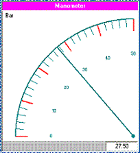

XML a fost creat pentru a defini strcturi de date, in ideea stocarii si transmiterii acestora. XML este un limbaj de
descriere asemanator cu HTML. In cazul XML-ului, tagurile nu sunt predefinite, acestea fiind definite de utilizator. XML este un limbaj autodescriptiv
fiind totodata o recomandare W3C Vezi W3C" Spre deosebire de HTML care ofera facilitati pentru afisare date, XML nu este destinat afisarii datelor, acesta fiind
utilizat in special pentru stocarea si transmiterea datelor.
Exemple de XML
Vom defini acum utilizand XML un instrument virtual. Pentru a defini un instrument virtual avem nevoie de o serie de
parametri cum ar fi tip aparat, domeniu de masura, dimensiune, culoare, valori maxime, minime, unitate de masura, texte de inscriptionare etc.
Exemplu XML
Dupa cum se vede au fost definite o serie de tag-uri de catre utilizator. Se observa de asemenea imbricarea unor tag-uri
in alte tag-uri. Astfel in interiorul tag-ului "Vimeter" au fost definite alte tag-uri care reprezinta atributele instrumentului virtual. Dupa cum se
observa, utilizatorul poate sa-si defineasca propriile tag-uri.
XML este extrem de util pentru transferul de date intre diverse aplicatii. Odata definit instrumentul virtual prin
intermediul structurii XML, se pot transmite date spre alte aplicatii.
Sa presupunem ca se trnsmite urmatorul XML:
Pe baza datelor continute de xml, alta aplicatie ar putea realiza urmatorul instrument virtual:

In cazul in care se doreste realizarea unei aplicatii dinamice intr-o pagina web in care sa se afiseze in mod dinamic
un astfel de instrument virtual, este absolut necesar sa se separe codul HTML de date, datele fiind pastrate deci in structuri XML. Alta modalitate ar
fi utilizarea bazelor de date pentru pastrarea datelor insa, pentru fiecare tip de baza de date exista modalitati si protocoale diferite pentru accesul
la date, in schimb XML asigura un mod standard de acces la date.
Structura arborescenta XML
Dupa cum s-a abservat din exemplele anterioare XML-ul are o structura arborescenta. In prima linie, se defineste
versiunea si modul de codificare iar in linia a doua se descrie elementul "radacina" (in cazul de sus "vimeter"). Urmatoarele linii, descriu elementele
"copil" sau "ramuri" (caption, cod, mood, aspect, etc.). Fiecare element poate avea "copii" (subelemente).
Am putea redefini structura "vimeter" astfel:
Se observa ca in noua structura XML, parametrii vimeter-ului au fost grupati in mai multe categorii (tip ,atribute,valori)
Practic structura unui XML are forma:
Utilizand structura ierarhica, putem descrie o instrumentatie virtula compusa din mai multe instrumente virtuale astfel:
Descriere corecta XML
Pentru ca o structura XML sa fie corecta trebuie sa indeplineasca urmatoarele cerinte:
trebuie sa contina relementul radacina
trebuie sa contina tag-uri de inchidere
tagurile sunt case sensitive
nu sunt admise erori de "neasted"
Afisare XML intr-o pagina html
O structura XML nu este afisata ca atare intr-o pagina html. Sa presupunem ca avem structura de tip XML:
Structura de sus, inclusa intr-o pagina hthl va fi afisata astfel:
Manometer
Bar-276 analog bar markmax="1" white magenta 288 316 vertical bar 27.5 0 50
Afisare XML intr-o pagina html utilizand CSS
Dupa cum se vede in exemplul de sus, afisarea datelor dintr-un XML intr-o pagina HTML nu este prea aspectuoasa.
Se poate utiliza CSS pentru a imbunatati modul de afisare al datelor provenite dintr-un XML.
Vom defini un fisier CSS "vimeter_vo.css" cu urmatorul continut:
Vom defini urmatorul XML:
In acest caz, afisarea intr-o pagina web, are forma:
Daca XML-ul este definit pe mai multe nivele descrierea CSS trebiuie sa se refere la acestea astfel se va
realiza fisierul CSS "vimeter_v1.css" cu urmatorul continut:
Urmatorul XML cu continutul:
In acest caz, afisarea intr-o pagina web, are forma:
Afisare XML utilizand Java Script
O structura XML poate fi utilizata si afisata utilizand Java Script. Java Script fiind un mediu de rogramare,
dispune de o serie de metode prin care sa identifice datele continute de structura XML, deci afisarea nu se rezuma numai la afisarea XML-ului
ci se pot crea diverse aplicatii in care sa se utilizeze datele continute de XML. Dupa cum se stie toate browser-ele de Internet interpreteaza
in mod nativ codul JavaScript. Exista totusi diferente intre diverse browsere. Astfel majoritatea browser-elor in afara de Internet Explorer
recunosc obiectul XMLHttpRequest() . Internet Explorer-ul recunoaste obiectul ActiveXObject("Microsoft.XMLHTTP") .
Ambele obiecte dispun de metoda: responseXML
Urmatoarea aplicatie realizata in html si JavaScript citeste si interpreteaza un XML indiferent de browser.
Dupa cum se observa, in pagina principala , s-au definit trei span-uri cu id-urile:"caption","mod" si "valoare".
Dupa cum se stie tag-ul span ofera posibilitatea de a defini un "carlig" in cadrul unui text sau a unui document, "carlig" spre care
putem face ulterior referiri utilizand nume de id atribuit.
Acestor span-uri li se atribuie prin metoda innerHTML valori citite dintr-un XML. XML-ul se precizaza prin metoda open care
are unul din parametri chiar numele XML-ului. Prin metoda send se trimite efectiv cerere, iar prin metoda responseXML se
face citirea. Dupa cum se observa in aplicatie, raspunsul este atribuit variabilei xmlDoc . Prin metoda:
getElementsByTagName.childNodes.nodeValue , se pot extrage datele din raspunsul primit.
Structura fisierului "vimeter_v0.xml" fiind:
Citirea se face la fel daca utilizam o alta structura a fisierului si anume fisierul "vimeter_v1.xml":
Avand un XML care contine mai multe instrumente virtuale : "vimeter_v2.xml":
Aplicatia care citeste datele referitoare la frecventmetru de exemplu este:
Pentru a afisa caracteristicile tuturor instrumentelor virtuale, vom folosi aplicatia:
Am folosit deci o iteratie pentru a citi toate elementele. Avand n elemente descrise in XML, iteratia se reia de n ori.
Dupa lansarea paginii cu sursa de mai sus, obtinem:
Am putea imbunatatii applicatia si sa afisam pe rand instrumentele descrise in XML. In aceasta situatie sursa paginii devine:
Dupa lansarea paginii cu sursa de mai sus, obtinem: